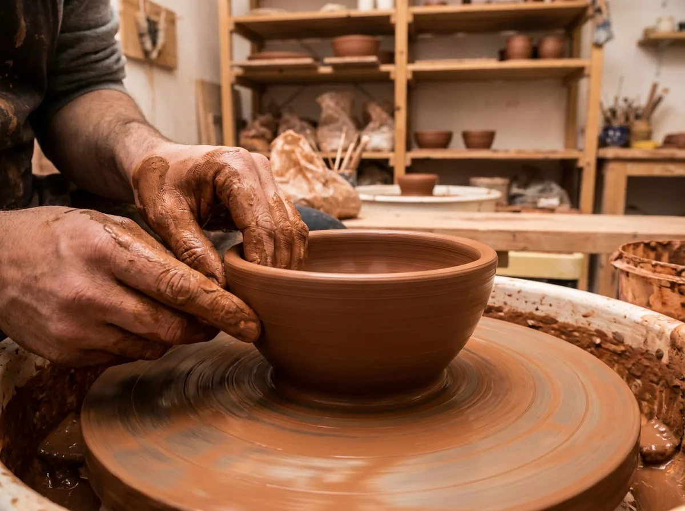

「陶隅」二字，取自「陶土的一隅」。我們希望在快速的生活裡，留一個角落給慢下來的器物——那些需要等待、無法複製、會隨時間改變的東西。

從一團土開始
所有作品都從手拉坯開始。陶藝師將陶土置於轆轤中心，以雙手與水控制升降與開口，數分鐘內讓一團土長成一只杯、一只碗。手作意味著差異：同一款杯子，每一只的重量、弧度與厚薄都略有不同，這些細微的差異正是手作的指紋。
交給火的窯變
我們鍾愛柴燒。柴燒不依賴化學釉料，而是讓木柴燃燒後的灰燼，在 1200 度以上的高溫中自然飄落、熔附於坯體表面，形成深淺不一的落灰、火痕與自然釉色。窯內位置、燒製時間、木材種類，每一個變因都會改變最後的樣貌。因此，沒有兩件柴燒作品會完全相同。
會養的器物
好的器皿不是買來就定型的。陶隅的作品會隨著日常使用慢慢改變：茶垢沉澱、油脂滋潤，霧面的釉色逐漸養出溫潤的光澤。我們相信，器物與人之間的關係，是用時間一起完成的。
關於我們的堅持
我們只使用無鉛、通過食品接觸安全的釉料；每一批出窯的作品都經過手工檢查；我們也接受小量客製訂單，讓器皿更貼近你的餐桌。陶隅期待，當你在清晨握起一只溫熱的杯子時，能感受到土、火與一雙手共同留下的溫度。